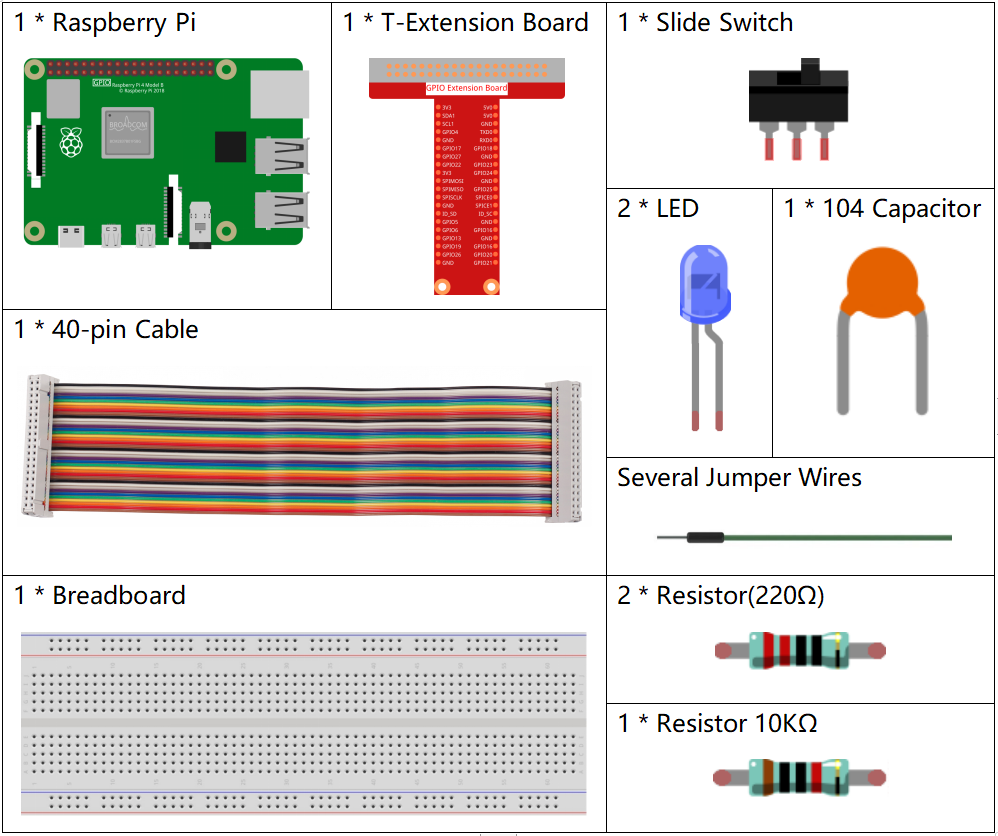
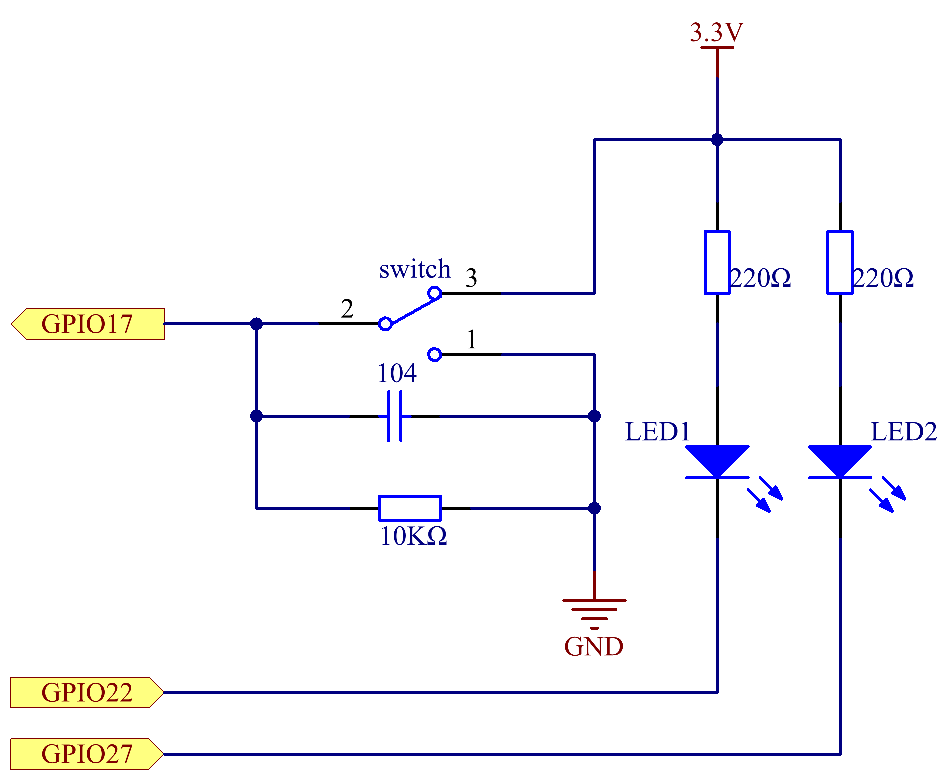

Nota
¡Hola! Bienvenido a la comunidad de entusiastas de SunFounder para Raspberry Pi, Arduino y ESP32 en Facebook. Únete para profundizar en Raspberry Pi, Arduino y ESP32 junto a otros apasionados.
¿Por qué unirse?
Soporte de expertos: Resuelve problemas postventa y desafíos técnicos con la ayuda de nuestra comunidad y equipo.
Aprender y compartir: Intercambia consejos y tutoriales para mejorar tus habilidades.
Acceso exclusivo: Obtén primicias sobre nuevos productos y adelantos.
Descuentos especiales: Disfruta de descuentos exclusivos en nuestros productos más recientes.
Promociones festivas y sorteos: Participa en sorteos y promociones de temporada.
üëâ ¬øListo para explorar y crear con nosotros? Haz clic en [Aqu√≠] y únete hoy mismo.
2.1.2 Interruptor Deslizante
Introducción
En esta lección, aprenderemos cómo utilizar un interruptor deslizante. Normalmente, el interruptor deslizante se suelda en una PCB como interruptor de encendido, pero aquí necesitamos insertarlo en la placa de pruebas, por lo que puede no quedar bien ajustado. Lo usamos en la placa de pruebas para demostrar su función.
Componentes
Principio
Interruptor Deslizante

Un interruptor deslizante, como su nombre lo indica, permite deslizar la barra del interruptor para conectar o desconectar el circuito, y así cambiar los circuitos. Los tipos más comunes son SPDT, SPTT, DPDT, DPTT, etc. El interruptor deslizante se usa generalmente en circuitos de bajo voltaje. Tiene características de flexibilidad y estabilidad, y es ampliamente utilizado en instrumentos eléctricos y juguetes eléctricos.
Cómo funciona: establece el pin central como el fijo. Al mover el interruptor hacia la izquierda, los dos pines de la izquierda se conectan; al moverlo hacia la derecha, los dos pines de la derecha se conectan. Así, funciona como un interruptor que conecta o desconecta circuitos. Consulta la figura a continuación:

El símbolo de circuito para el interruptor deslizante se muestra a continuación. El pin 2 en la figura se refiere al pin central.

Condensador
El condensador es un componente que tiene la capacidad de almacenar energía en forma de carga eléctrica o de producir una diferencia de potencial (voltaje estático) entre sus placas, de manera similar a una pequeña batería recargable.
Unidades estándar de Capacitancia
Microfaradio (μF) 1μF = 1/1,000,000 = 0.000001 = \(10^{- 6}\) F
Nanofaradio (nF) 1nF = 1/1,000,000,000 = 0.000000001 = \(10^{- 9}\)F
Picofaradio (pF) 1pF = 1/1,000,000,000,000 = 0.000000000001 = \(10^{- 12}\)F
Nota
Aquí usamos un condensador 104 (10 x 104PF). Al igual que los anillos de las resistencias, los números en los condensadores ayudan a leer los valores una vez ensamblados en la placa. Los dos primeros dígitos representan el valor y el último dígito del número indica el multiplicador. Por lo tanto, 104 representa una potencia de 10 x 10 elevado a 4 (en pF) igual a 100 nF.
Diagrama Esquemático
Conecta el pin central del interruptor deslizante al GPIO17 y dos LEDs a los pines GPIO22 y GPIO27, respectivamente. Así, al mover el interruptor podrás ver los dos LEDs encenderse de forma alternada.
Procedimientos Experimentales
Paso 1: Construye el circuito.
{kind=link}
Para Usuarios de Lenguaje C
Paso 2: Dirígete a la carpeta del código.
cd ~/davinci-kit-for-raspberry-pi/c/2.1.2
Paso 3: Compila.
gcc 2.1.2_Slider.c -lwiringPi
Paso 4: Ejecuta el archivo compilado.
sudo ./a.out
Mientras el código se ejecuta, si el interruptor se conecta hacia la izquierda, el LED amarillo se encenderá; si se conecta hacia la derecha, se encenderá el LED rojo.
Nota
Si no funciona después de ejecutarlo, o aparece un mensaje de error: "wiringPi.h: No such file or directory», consulta c code is not working?.
Código
#include <wiringPi.h>
#include <stdio.h>
#define slidePin 0
#define led1 3
#define led2 2
int main(void)
{
// Si la inicialización de wiring falla, imprime mensaje en pantalla
if(wiringPiSetup() == -1){
printf("setup wiringPi failed !");
return 1;
}
pinMode(slidePin, INPUT);
pinMode(led1, OUTPUT);
pinMode(led2, OUTPUT);
while(1){
// interruptor deslizante alto, led1 encendido
if(digitalRead(slidePin) == 1){
digitalWrite(led1, LOW);
digitalWrite(led2, HIGH);
printf("LED1 on\n");
delay(100);
}
// interruptor deslizante bajo, led2 encendido
if(digitalRead(slidePin) == 0){
digitalWrite(led2, LOW);
digitalWrite(led1, HIGH);
printf(".....LED2 on\n");
delay(100);
}
}
return 0;
}
Explicación del Código
if(digitalRead(slidePin) == 1){
digitalWrite(led1, LOW);
digitalWrite(led2, HIGH);
printf("LED1 on\n");
}
Cuando el interruptor deslizante se mueve hacia la derecha, el pin central y el derecho se conectan; la Raspberry Pi lee un nivel alto en el pin central, por lo que el LED1 se enciende y el LED2 se apaga.
if(digitalRead(slidePin) == 0){
digitalWrite(led2, LOW);
digitalWrite(led1, HIGH);
printf(".....LED2 on\n");
}
Cuando el interruptor deslizante se mueve hacia la izquierda, el pin central y el izquierdo se conectan; la Raspberry Pi lee un nivel bajo, por lo que el LED2 se enciende y el LED1 se apaga.
Para Usuarios de Lenguaje Python
Paso 2: Accede a la carpeta del código.
cd ~/davinci-kit-for-raspberry-pi/python
Paso 3: Ejecuta.
sudo python3 2.1.2_Slider.py
Mientras el código se ejecuta, si el interruptor se conecta hacia la izquierda, el LED amarillo se encenderá; si se conecta hacia la derecha, se encenderá el LED rojo.
Código
Nota
Puedes Modificar/Restablecer/Copiar/Ejecutar/Detener el código a
continuación. Antes de eso, necesitas dirigirte a la ruta del código
fuente como davinci-kit-for-raspberry-pi/python.
import RPi.GPIO as GPIO
import time
# Configura #17 como pin del interruptor deslizante, #22 como pin de led1, #27 como pin de led2
slidePin = 17
led1Pin = 22
led2Pin = 27
# Define una función de configuración inicial
def setup():
# Configura los modos de GPIO al sistema de numeración BCM
GPIO.setmode(GPIO.BCM)
# Configura slidePin como entrada
# Configura ledPin como salida,
# y el nivel inicial a alto (3.3V)
GPIO.setup(slidePin, GPIO.IN)
GPIO.setup(led1Pin, GPIO.OUT, initial=GPIO.HIGH)
GPIO.setup(led2Pin, GPIO.OUT, initial=GPIO.HIGH)
# Define la función principal del proceso
def main():
while True:
# interruptor deslizante alto, led1 encendido
if GPIO.input(slidePin) == 1:
print ('LED1 ON')
GPIO.output(led1Pin, GPIO.LOW)
GPIO.output(led2Pin, GPIO.HIGH)
# interruptor deslizante bajo, led2 encendido
if GPIO.input(slidePin) == 0:
print (' LED2 ON')
GPIO.output(led2Pin, GPIO.LOW)
GPIO.output(led1Pin, GPIO.HIGH)
time.sleep(0.5)
# Define una función destroy para limpiar todo después de
# que el script termine
def destroy():
# Apaga el LED
GPIO.output(led1Pin, GPIO.HIGH)
GPIO.output(led2Pin, GPIO.HIGH)
# Libera los recursos
GPIO.cleanup()
# Si ejecutas este script directamente, haz:
if __name__ == '__main__':
setup()
try:
main()
# Cuando se presiona 'Ctrl+C', se ejecutará la función
# destroy()
except KeyboardInterrupt:
destroy()
Explicación del Código
if GPIO.input(slidePin) == 1:
GPIO.output(led1Pin, GPIO.LOW)
GPIO.output(led2Pin, GPIO.HIGH)
Cuando el interruptor deslizante se mueve hacia la derecha, el pin central y el derecho se conectan; la Raspberry Pi lee un nivel alto en el pin central, por lo que el LED1 se enciende y el LED2 se apaga.
if GPIO.input(slidePin) == 0:
GPIO.output(led2Pin, GPIO.LOW)
GPIO.output(led1Pin, GPIO.HIGH)
Cuando el interruptor deslizante se mueve hacia la izquierda, el pin central y el izquierdo se conectan; la Raspberry Pi lee un nivel bajo, por lo que el LED2 se enciende y el LED1 se apaga.
Imagen del Fenómeno